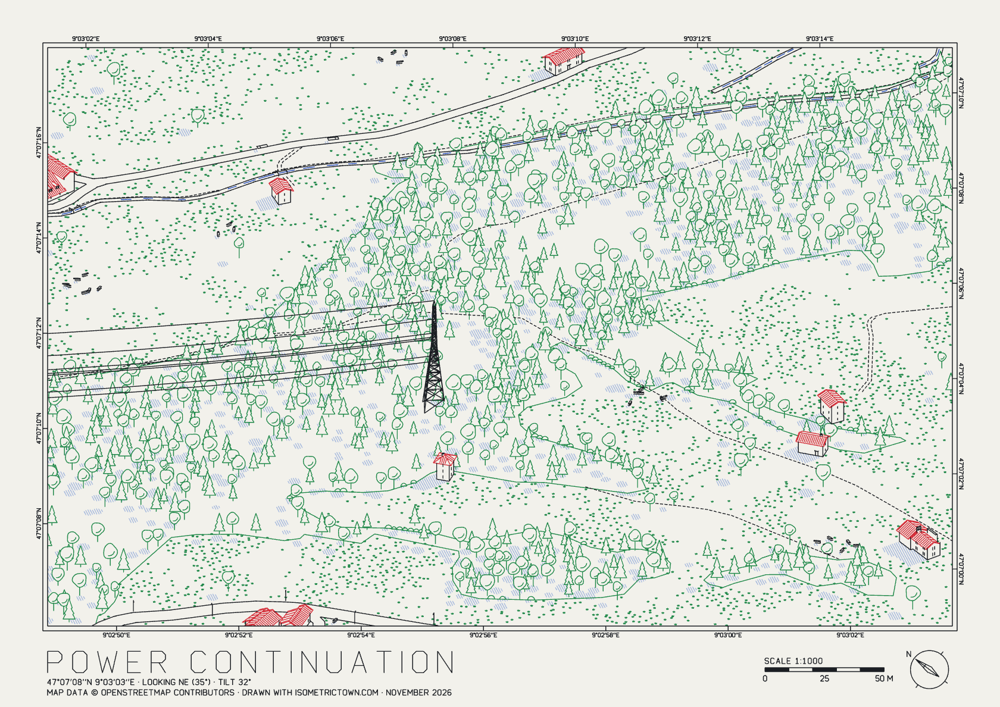
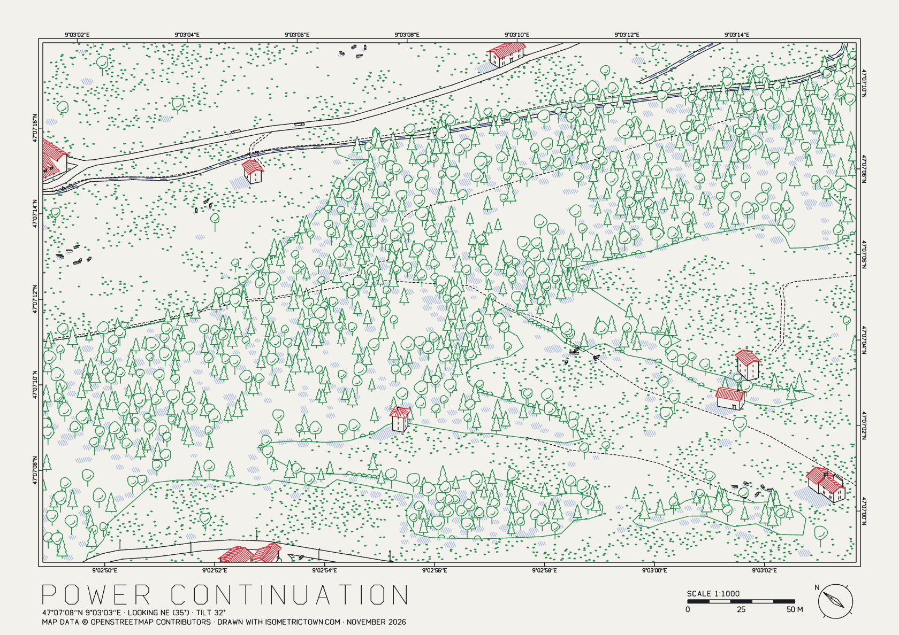

Power lines that continue beyond the print
Round 28 · 47.1190° N, 9.0507° E · 1:1000 · bearing 35°
The reported pylon was the end of a partially accepted inferred route. Checking each span prevented lake crossings but left those partial routes visible.
Changes
- Power-enabled drawings load an 800 m outer terrain margin, capped at sixteen additional cached tiles. Failed outer requests leave terrain unverified.
- Transmission candidates inspect two spans beyond the ground box. Each continuous run is buffered before it is drawn.
- Both end towers must lie wholly outside the drawing, including their elevated tops and arms, with an 8 mm guard. Incomplete runs are omitted.
- Extra tile geometry feeds only power checks. These routes remain artistic inferences, not confirmed utility infrastructure.
Reported location


Verification
The exact-location render drops from 10,251 to 10,221 strokes; wasted ink falls from 4.5% to 4.0%. Six LOD comparisons at Mollis, Emmental and the Interlaken lakeshore (1:1000 and 1:1550) have unchanged drawing metrics. Their close-ups and the reported location were inspected on screen.
The Emmental golden at 1:4000 intentionally loses nine raw power strokes (125.4 mm). Its other feature counts are unchanged. The setting-gate test now uses the existing Midtown fixture, which has supported roadside wires.
Regression tests cover rejected terrain, water crossings, panning, internal run endings, elevated endpoint visibility and the outer-tile budget. No physical pen plot or exhaustive pan sweep was checked.